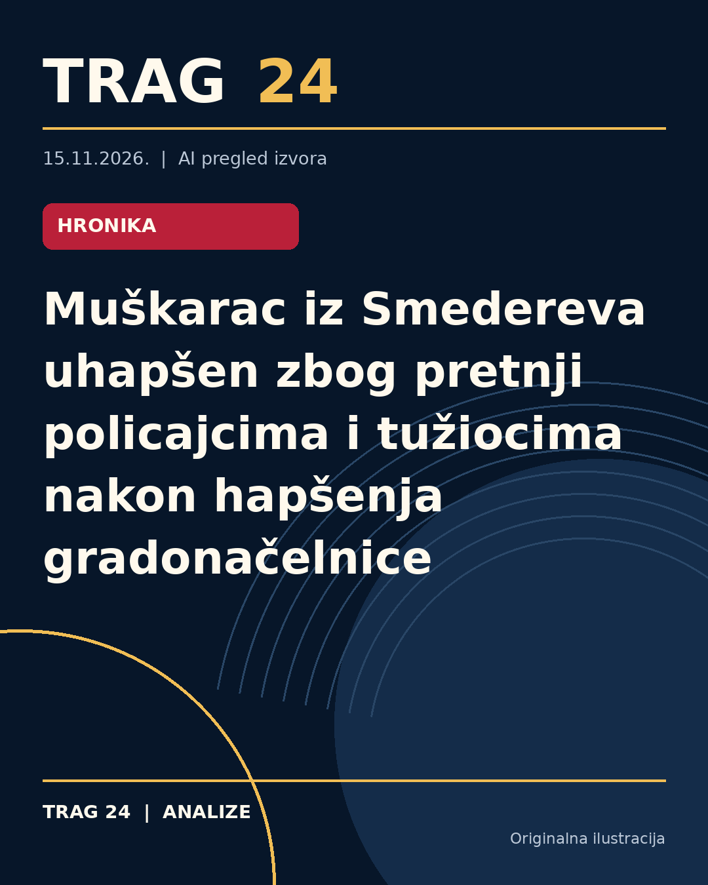

Muškarac iz Smedereva uhapšen zbog pretnji policajcima i tužiocima nakon hapšenja gradonačelnice

ŠTA SE DOGODILO
M.S. (63) iz Smedereva uhapšen je zbog sumnje da je putem društvene mreže Fejsbuk uputio pretnje po život i telo pripadnicima policijske uprave, javnim tužiocima i članovima njihovih porodica. Pretnje su bile povezane sa pritvorom koji je određen gradonačelnici Smedereva, Jasmini Vojinović.
HRONOLOGIJA
Gradonačelnica Jasmina Vojinović uhapšena je 12. novembra 2026. godine, zajedno sa još dvojicom funkcionera, zbog navodnog nepreduzimanja mera za zaštitu životne sredine. Istog dana, M.S. je putem Fejsbuka objavio pretnje upućene policajcima i tužiocima, uz fotografiju vatrenog oružja. Nakon što je tužilaštvo saznalo za objavu, bila je raspisana potraga za M.S., koji je nakon hapšenja zadržan do 48 sati, a zatim mu je predložen pritvor.
ŠTA NAVODE IZVORI
Tužilaštvo u Smederevu navodi da je M.S. osumnjičen za krivično delo ugrožavanje sigurnosti, a da je predmet prebačen na Više javno tužilaštvo u Beogradu radi daljeg postupanja zbog svoje nadležnosti vezane za visokotehnološki kriminal. Razlog za predlog pritvora su okolnosti koje ukazuju na opasnost da bi osumnjičeni mogao uticati na oštećene ili ponoviti krivično delo u kratkom vremenskom periodu.
ŠTA JE POTVRĐENO
Potvrđeno je da je M.S. 12. novembra 2026. godine objavio pretnje na Fejsbuku, koje su uključivale i fotografiju vatrenog oružja. Takođe je potvrđeno da je nakon hapšenja osuđeni 63-godišnjak prebačen na dalju nadležnost Posebnog odeljenja za visokotehnološki kriminal Višeg javnog tužilaštva u Beogradu i da mu je predložen pritvor.
ŠTA NIJE POTVRĐENO
Nije potvrđeno da li je M.S. imao neposrednu povezanost sa gradonačelnicom Vojinović ili drugim uhapšenim funkcionerima, niti su dostupni detalji o motivima koji su ga naveli da uputi pretnje. Takođe nisu poznati detalji o daljim istragama ili o tome da li je pretnje realizovao ili pokušao da izvrši.
ŠTA OSTАJE OTVORENO: Ostaje otvoreno da li će sud usvojiti predlog o pritvoru i kako će se dalje razvijati pravni postupak protiv M.S. Takođe nije poznato da li će biti novih informacija o bezbednosnoj proceni ili o potencijalnim posledicama pretnji upućenih pojedincima iz policije i tužilaštva.
Izvori
- https://nova.rs/vesti/hronika/muskarac-uhapsen-u-smederevu-zbog-pretnji/
- https://informer.rs/hronika/vesti/1170099/hapsenje-smederevo-pretnje-policija-tuzioci
- https://www.blic.rs/vesti/hronika/muskarac-63-iz-smedereva-osumnjicen-da-je-pretio-smrcu-tuziocima-i-policajcima/j6e7s69
Ova analiza je pripremljena uz pomoć veštačke inteligencije na osnovu javno dostupnih izvora. Navodi izvora nisu nužno nezavisno potvrđeni.